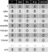
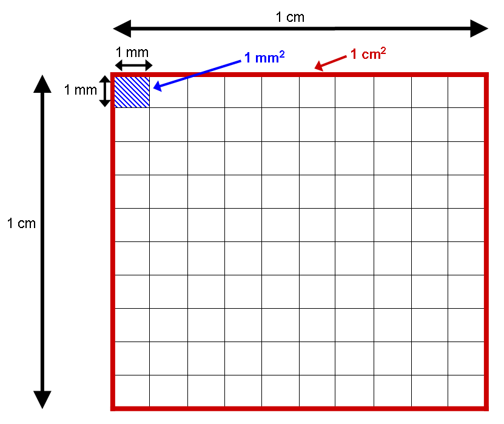
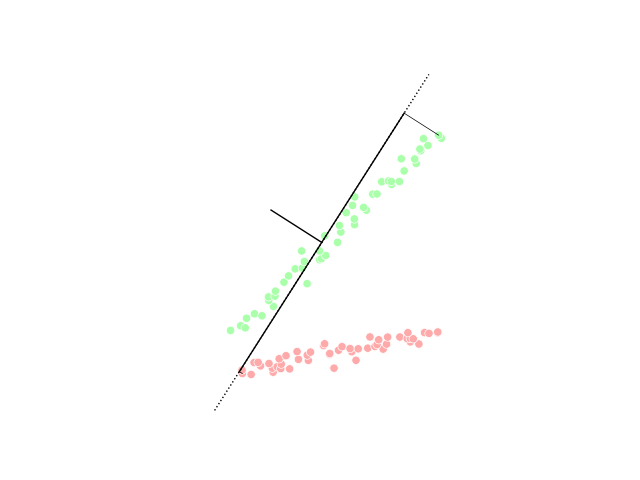
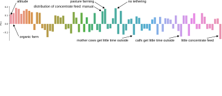
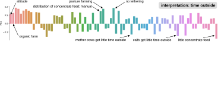
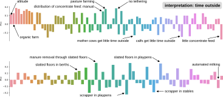
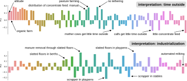
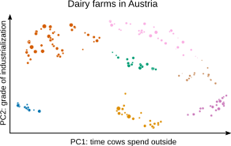

- We have already seen an example of feature engineering for data transformation: one-hot encoding.
- We can do a lot more to make the data we have more useful for machine learning applications.
- On the other hand, data can also have too many attributes / features.
- Reducing the number of attributes is called dimensionality reduction.
- We work at a headhunting agency and want to find out which candidates we should focus our efforts on.
- We use information on demographics, income, and education to predict employability.
- We transform boolean values into ones and zeros.
- We use one-hot encoding to separate categorical attributes into multiple columns with binary attributes.
- Different value ranges or feature scales can lead to large numbers getting more weight than small ones, even if this is not intended.
- We standardize numerical attributes by subtracting the mean value of the attribute and deviding by the standard deviation (also called Z-score normalization).
- Some attributes of people are protected and may not be used for making decisions about humans.
- Gender is one of these atributes, as is for example religion and ethnicity - we remove it.


- From how much annual income a person earns per age, conclusions can perhaps be drawn about the person's ambitions.
- We construct a new attribute income / age.
- The phone numbers are useless as they are assigned randomly. But from the area code, we can draw conclusions about the country of residence.
Problem 1: Large Data Volumes
Let's recall the example with the text:
- There are around 600,000 words in the Oxford English Dictionary.
- To represent a sentence with 6 words, we need a 600,000 x 6 cell table.
- This would occupy 600,000 x 6 x 32 / 8 / 1024 / 1024 = 13.7 Megabytes of memory* → very inefficient.

- For each additional feature the space in which the data resides gains another dimension. With each dimension, the volume increases rapidly.
- Consequence 1: Overfitting
100 observations cover the (one-dimensional) space between 0 and 1 well. In a 10-dimensional space, they are far too few to have enough similar examples for an algorithm to learn general patterns. - Consequence 2: Difficulty of finding clusters
The difference between the smallest and largest distance between two data points becomes increasingly small.
See this post for an explanation.

One centimeter consists of 10 millimeters, whereas one square centimeter consists of 100 square millimeters. Source: Wikipedia, CC BY-SA 3.0.
{kind=link}
One centimeter consists of 10 millimeters, whereas one square centimeter consists of 100 square millimeters. Source: Wikipedia, CC BY-SA 3.0.
→ Rule of thumb: five observations are needed for every additional feature in the data set.
→ Distance measures like Euclidean distance don't work well for high-dimensional data. Use similarity measures (Cosine similarity) instead.
- Feature Selection: Remove features that do not carry important information.
- Projection: We search for a projection of the data points into a space where differences between data points are maximized.
- One method by which this can be achieved is Principal Component Analysis (PCA).
- The result of a PCA is a projection of the data into a space where the variance of the data points is concentrated in a few dimensions.

{kind=link}
→ The result of PCA initially has as many dimensions as the original space, but only a few are truly important. We can remove the other dimensions without loosing much information.





- Feature Engineering helps us get the most out of our data and avoid problems with machine learning algorithms or legal requirements. Techniques include:
- One-hot encoding
- Construction of new attributes
- Standardization
- Deletion of features
- Dimensionality Reduction helps us to avoid problems with too many features (Curse of Dimensionality). Problems include:
- High menory and computation requirements
- Overfitting
- Difficulty of finding clusters when using distance measures
- Principal Component Analysis (PCA) is an approach to dimensionality reduction. It concentrates the variance contained in the data into a few dimensions, allowing us to delete the rest.